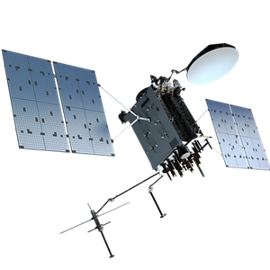
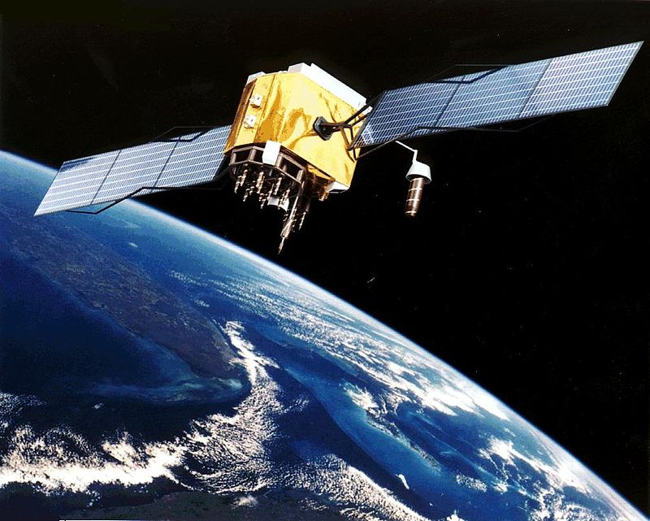

Welcome to Science Project
India's contribution to satellite technology
GSAT Satellites:
GSAT stands Geosynchronous Satellite. GSAT satellites are a series of communications satellites developed by India for civillian use . India has launched many GSAT satellites, which help in broadcasting TV channels, providing internet access, and enabling communication in remote areas. These satellites help people in far - off villages stay connected with the rest of the country.Another communication satelite is INSAT ( Indian National Satellite System) .
Navigation
NAVIC (India's GPS) :
Just like the GPS you might use on your phone , India has it's own navigation system called NAVIC.Finding your way :
NAVIC helps people and vehicals find their way around , just like GPS.


Weather Prediction :
India's satellites constanstly watch the weather , helping to predict all kinds of natural disasters like.... cyclones , stroms , tsunamies and etc....
these predictions could help people prepare for all the upcoming natural disasters.
Disaster Mangement :
Emergencies:
When disasters like floods , earthuakes , and ect...
happens , satellites provide valuable information to rescue `teams.
Assesing Damage :
They help assess the damage and plan relief efforts more effectively.
India's satellites are like the countrie's eyes in the sky, helping with communication, navigation, weather prediction, and disaster management, making life better for millions of people.
 Back to Index
Back to Index
Ananya . Nalamwar